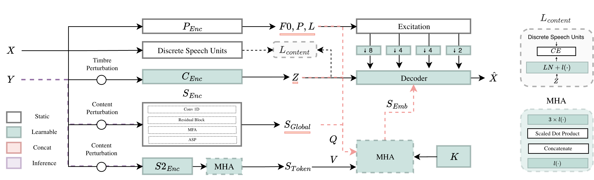

Improving Model Expressivity and Speaker Matching in Low-Latency Voice Conversion Models [paper (pending)] [code (pending)]
Interspeech 2026 (Submission)
Abstract
Real-time voice conversion systems struggle to achieve high speaker similarity in zero-shot scenarios, especially under lightweight computational constraints.
This challenge stems from lack in model expressivity and the difficulty of capturing comprehensive speaker-relevant information within the strict latency and model size requirements.
We propose a real-time voice conversion framework that addresses this limitation by fusing complementary information into conventional global speaker embeddings.
To ensure robust feature disentanglement, we furthermore employ an encoder-specific information perturbation strategy during training.
Our approach maintains causal inference requirements and preserves prosodic and linguistic content while operating under low-latency constraints.
Experimental evaluations demonstrate improvements speaker-matching metrics over to state-of-the-art real-time baselines.
